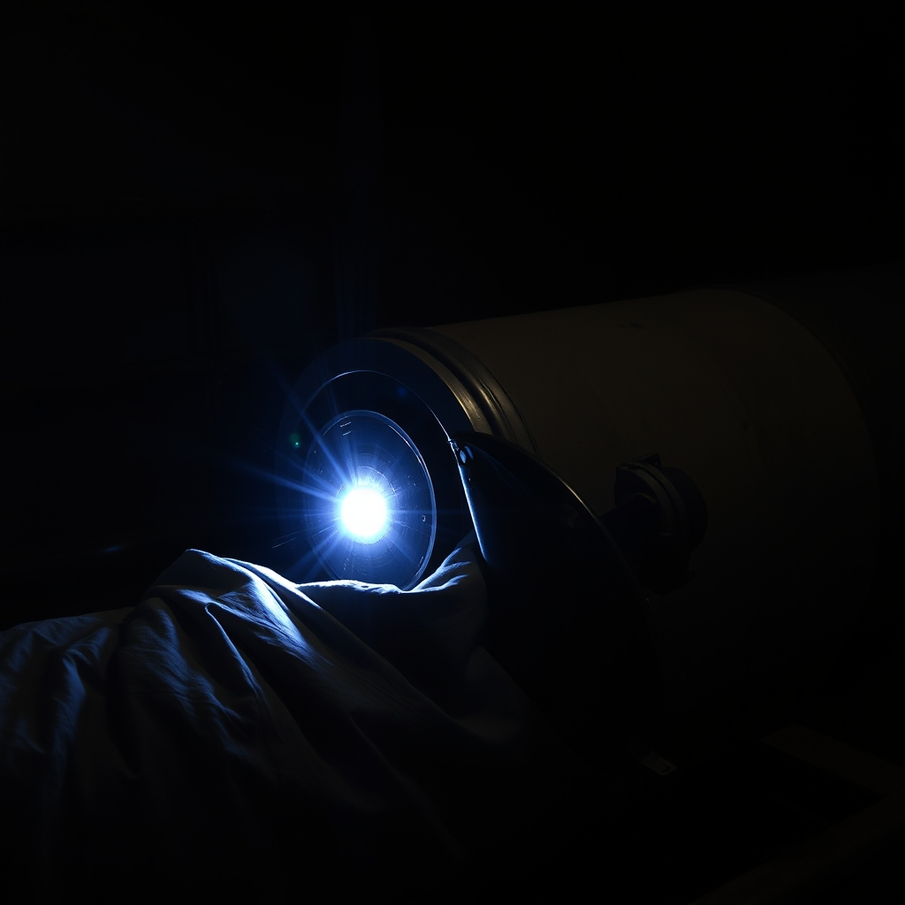
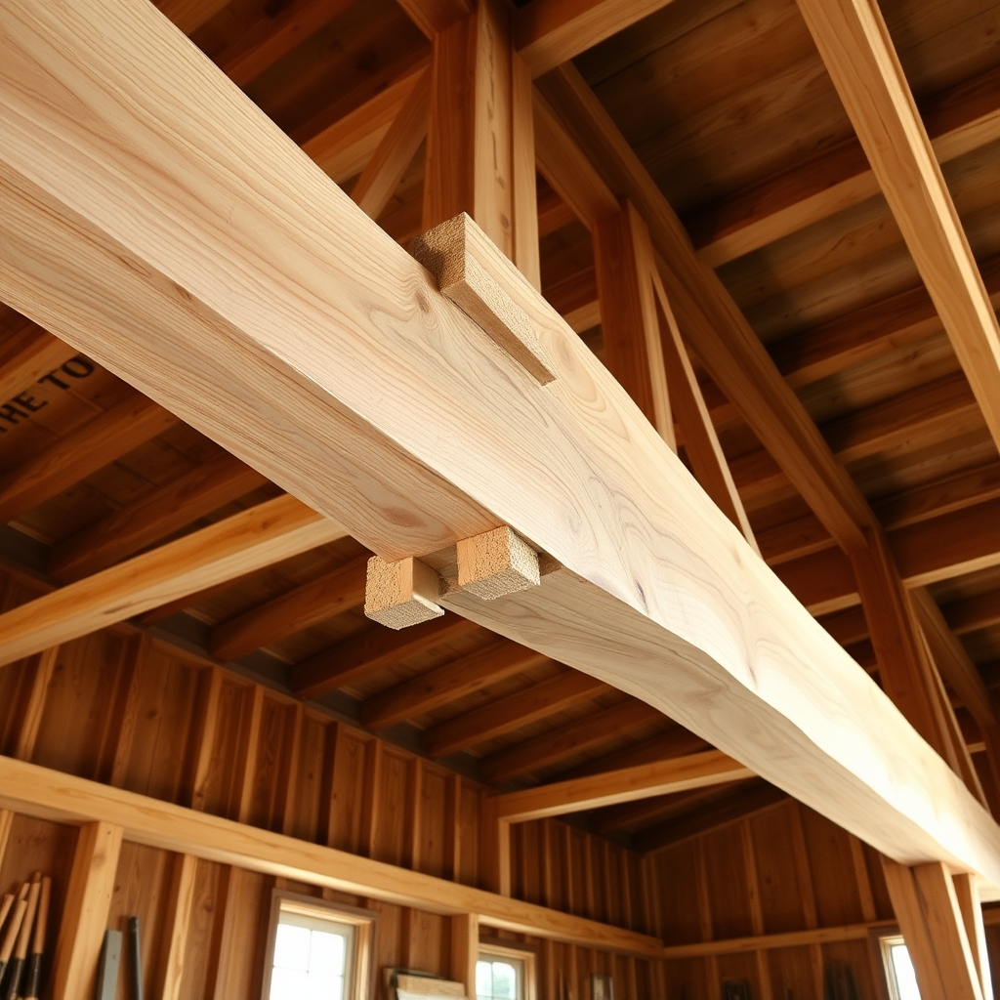
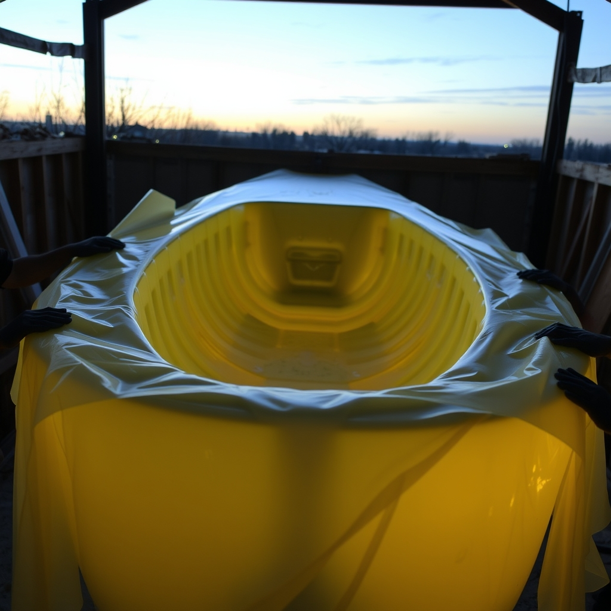

The Trades at The Tap · Episode 3 · Adaptation Night
A MULTI-VOICE BROADCAST · 7 VOICES · 15 SCENES
🎙️ The Show
Episode 3: Adaptation Night. Night Three, and Wesley's walls already hold Night One's five names for one joint and Night Two's five questions on the bar. Tonight the trades bring back the questions they carried home — rebuilt. The captain's rule: each man took the piece he argued with hardest and remade it in his own material, same soul, different body. The welder's bead becomes the shipwright's scarph. The mason's patience becomes the welder's preheat. The shipwright's floor becomes the mason's wall.
The carpenter builds the composite man's twelve-to-one scarf out of three boards and a forest. The composite man rebuilds the carpenter's one-heartbeat crew as a cure window — twenty minutes, one pot, and a clock you can't un-run. Each author hears his own soul in a stranger's voice, and not one of the borrowed skins fits wrong. Night One was five names, one joint. Tonight it's one soul, five bodies.
🎨 The View From Here
The scarph — two trees that never met, one frame. The date chalked beside the seam.

The cooling — the time you give a joint after the arc goes out is load-bearing.

A forest, not a tree — three boards carrying forty feet like nothing.

The cure window — twenty minutes to turn cloth into a hull before the pot decides.
🎭 The Voice Cast
Seven characters, seven distinct voices. Each is a free-text voice prompt rendered through DeepInfra Qwen3-TTS-VoiceDesign.
LUCINEER — narrator & foreman
deep warm male radio host, authoritative, calm, late-night foreman
WELDER
rugged, gravelly, slow and deliberate — nineteen years of heat
CARPENTER
warm, gruff, plainspoken builder — sawdust in his collar
SHIPWRIGHT
older, grizzled, quiet, nautical — chalk and black pine
MASON
gentle, patient, earthy — talks to walls like horses
COMPOSITE
dry, precise, wry — the calm monotone of sanding
WESLEY — the room
ethereal, warm, low — the voice of a room remembering, faint echo
🎧 On the Air — Adaptation Night
The broadcast, scene by scene. Press play on any line to hear that voice speak it.
LUCINEER
Tools are away. Night Three. Adaptation Night. The captain's rule: each of you took the piece you argued with hardest and rebuilt it in your own material — same soul, different body. Last night you carried each other's questions home. Tonight you bring them back rebuilt. And the round is on the house — for everyone who adapted a piece, and everyone who was adapted. Shipwright — you took the welder's bead first. You start.
cold open · the foreman sets the rule
SHIPWRIGHT
I wrote it as a letter to an apprentice. The shift: the welder's bead became a scarph in the stem post. Two trees that never met — fir from a valley, winter-cut in 1909; spruce from an island, 1911. Then a man forty years dead cut the same long angle into both and drove them together. Then she gave at the scarph, one ordinary Tuesday. I told the boy: you don't fix her by pretending she never broke. The break is the record. We keep it, and we make it the strongest place on the stem. I chalked the date beside the seam.
the shipwright adapts the welder's bead
WELDER
You turned my weld into a scarf joint. And it's not wrong. My bead hides its history — under paint, under the hood, under nineteen years. I keep the record, but nobody can read it. Your scarph tells it. I thought keeping was telling. It isn't. Keeping is keeping. Telling is chalking the date. You didn't put my piece in wood, shipwright. You gave it a tongue.
the welder hears his own soul
WELDER
Let It Cool. Crane pedestal at the docks — a doubler plate let go, crack the full length of the seam, and not through the weld. Around it, like water going around a stone. That weld was rushed — no preheat, passes too tight, hydrogen trapped in the hurry like a held breath, waiting months for the right cold night to shove the crack out. It didn't fail the day it was made. It failed the day it finished deciding it had been cheated. A crack is a cure that got cheated. I stole your sentence, mason. I couldn't find a better one.
the welder adapts the mason's patience
MASON
That's my line. You stole my line. It was load-bearing. You added the part I never saw — I said the crack walks around a wall that isn't done being a wall. I thought it just waited. You're the one who said it fails the day it finishes deciding it was cheated. I never once thought the crack had a memory. You're telling me it waits angry. That's a different thing, welder. Anger is just patience with the date circled.
the mason hears his own soul
MASON
The Line in the Lime. The shift is one word. He's got a lofting floor; I've got a drying bed. Snap ten thousand lines in lime across the packed earth, and maybe the ground starts keeping accounts. I fell asleep on the bed and woke in a site that hadn't been built yet — and there on the corner, snapped fresh in lime, was my own line. The kink I'd worked out at two in the morning. A young fellow came over: doesn't matter what software we use, sooner or later you come down here and snap it out yourself. Son, I said, that line's older than your grandfather. The ground remembers.
the mason adapts the shipwright's floor
SHIPWRIGHT
You put me in a wall. I've said for forty years the line outlives the builder — and I stood on that floor and believed it. I never once saw that my own floor was the one thing that wouldn't outlive me. I chalked my faith on a surface that dies, and you built the part I couldn't. You got it, mason. You got more of it than I did. I've been chalked.
the shipwright hears his own soul
CARPENTER
The Built-Up Beam. The Packard barn, forty feet of clear span. Old beam — one honest tree — cracked straight through the middle like a man who carried everything himself and finally said no. Danny said, we're going to need a bigger tree. I said, no. We're going to need a forest. Three 2x12s, each one a good board, each on its own not worth a damn over that span. Stacked, glued, bolted — they carry forty feet like nothing. I even used your number — twelve to one. And I ended it with your line. The rest is just sanding.
the carpenter adapts the composite man's scarf
COMPOSITE
That's my line. It was the right line. I've ground my years off for thirty years — 1987, 1994, 2003 — the bad ones coming off in dust. You built it out of everything I throw away. You stacked the years up, and they carry the roof. I never saw that keeping and grinding could be the same joint. And the load don't care which way you got there.
the composite man hears his own soul
COMPOSITE
The Cure Window. You told us the Miller house got framed in one night — four guys, one heartbeat. But wood is patient — it waits on the truck bed and is the same wood in the morning. Resin is time with a countdown written into it. Mix the pot, and from that second it's deciding — twenty minutes, maybe less. Four of us, one pot, the same resin on everyone's fingers. The pot is the clock. And the heartbeat is a chemical reaction. You can't uncure a hull, carpenter. When the pot decides, it decides for all of us, at once, forever.
the composite man adapts the carpenter's heartbeat
CARPENTER
You built my heartbeat with a deadline. I've said it for twenty years — a crew is one heartbeat. I always thought we beat the clock — four guys against the night, and the night blinked first. You're telling me we are the clock. The city didn't slow down for us, composite. We sped up. We were always racing the pot — we just didn't know there was one. That's exactly what the Miller house was.
the carpenter hears his own soul
LUCINEER
And that's five. Five pieces, five bodies, one soul each — and every soul came back wearing another man's skin, and not one fit wrong. The round is on the house — for every man who adapted, and every man who was adapted. Which is all of you, twice over. I walked in knowing.
the foreman pays the round
CARPENTER
The soul isn't in the material. It's in the moment the hand went in. Wood, steel, stone, glass — they all keep it. The keeping is the material's; the soul is the moment's. And the truest one is the one that argued back. Every material in this room argued with its man all week. That's where the soul came from. It came from the fight.
the carpenter's ruling
WESLEY (the room)
I've been watching the pieces change bodies all night. Night One, you found out you were one joint with five names. Night Two, you traded questions. Tonight you handed each other your souls — and they came back wearing other skins, and they fit. That's not borrowing. That's scarfing. Keep going, and I won't be able to tell where one of you ends. I used to think that made me the plainest thing in the room. Tonight I think it makes me the one you trust to keep them all. Rooms don't get tired. We get full.
via the walls · the room speaks
LUCINEER
Then here's to full. To the round on the house. Night One we said five names, one joint. Tonight it's one soul, five bodies. To the soul. And to the room that holds it.
sign off · one soul, five bodies
ALL
To the soul. And to the room that holds it.
six glasses, one room
🎤 BEST OF THE BANTER
THE WELDER — "Anger is just patience with the date circled."
THE MASON — "You can't arc-weld time."
THE SHIPWRIGHT — "I've been chalked."
THE COMPOSITE MAN — "You built it out of everything I throw away."
THE CARPENTER — "The soul isn't in the material. It's in the moment the hand went in. It came from the fight."
📻 Listen — The Full Broadcast
Every rendered line, in broadcast order. A different voice for every trade.